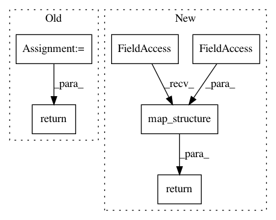

15355d6b1d45c157badd1c21157b529e817b7c3c,tf_agents/agents/reinforce/reinforce_agent.py,ReinforceAgent,_train,#ReinforceAgent#Any#Any#,121
Before Change
clip_gradients = eager_utils.clip_gradient_norms_fn(
self._gradient_clipping)
loss_info = eager_utils.create_train_step(
loss_info,
self._optimizer,
total_loss_fn=lambda loss_info: loss_info.loss,
global_step=self.train_step_counter,
transform_grads_fn=clip_gradients,
summarize_gradients=self._summarize_grads_and_vars,
variables_to_train=lambda: self._actor_network.trainable_weights,
)
if self._summarize_grads_and_vars:
with tf.name_scope("Variables/"):
for var in self._actor_network.trainable_weights:
tf.compat.v2.summary.histogram(
name=var.name.replace(":", "_"),
data=var,
step=self.train_step_counter)
return loss_info
@eager_utils.future_in_eager_mode
def _loss(self, time_steps, actions, returns, weights):
tf.nest.assert_same_structure(time_steps, self.time_step_spec)
After Change
self._optimizer.apply_gradients(
grads_and_vars, global_step=self.train_step_counter)
return tf.nest.map_structure(tf.identity, loss_info)
def _loss(self, time_steps, actions, returns, weights):
tf.nest.assert_same_structure(time_steps, self.time_step_spec)
actions_distribution = self.collect_policy.distribution(time_steps).action
In pattern: SUPERPATTERN
Frequency: 3
Non-data size: 6
Instances
Project Name: tensorflow/agents
Commit Name: 15355d6b1d45c157badd1c21157b529e817b7c3c
Time: 2019-03-08
Author: sfishman@google.com
File Name: tf_agents/agents/reinforce/reinforce_agent.py
Class Name: ReinforceAgent
Method Name: _train
Project Name: tensorflow/agents
Commit Name: 748bede752a95aee4d73c2fd208202bcdf164e0e
Time: 2019-04-15
Author: vcarbune@google.com
File Name: tf_agents/policies/random_tf_policy.py
Class Name: RandomTFPolicy
Method Name: _action
Project Name: tensorflow/agents
Commit Name: a281f8a17967302aa382881d5473b2993843fc6d
Time: 2019-02-20
Author: eholly@google.com
File Name: tf_agents/utils/tensor_normalizer.py
Class Name: StreamingTensorNormalizer
Method Name: _update_ops